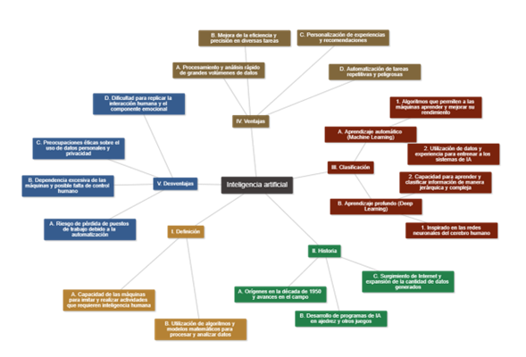

Entendemos la definición de la Inteligencia Artificial (IA) como la capacidad de las máquinas para imitar y realizar actividades que normalmente requerirían inteligencia humana. En pocas palabras, es la creación de sistemas informáticos que pueden pensar, aprender y tomar decisiones de manera similar a los seres humanos. Además tienen la capacidad para simular procesos de pensamiento humano, como el aprendizaje, la percepción y la toma de decisiones. Utilizando algoritmos y modelos matemáticos, la Inteligencia artificial (IA) puede analizar y aprender de grandes conjuntos de datos para generar conocimiento y solucionar problemas complejos.
Los alcances de la Inteligencia artificial (IA) en la humanidad son inmensos. Desde la medicina hasta la industria, En este sentido ha demostrado su valía al mejorar la eficiencia, aumentar la precisión y facilitar la toma de decisiones en diversas áreas. En la medicina, por ejemplo, puede diagnosticar enfermedades con una mayor exactitud y rapidez, lo que permite tratamientos más efectivos y salvamento de vidas. En la industria, automatiza tareas repetitivas y peligrosas, aumentando la productividad y la seguridad.
Como todas las tecnologías, también tiene ventajas y desventajas. Entre las ventajas, se destaca su capacidad para procesar y analizar grandes cantidades de datos rápidamente, brindando información precisa y valiosa. Además, puede aprender y adaptarse a medida que se enfrenta a nuevas situaciones, mejorando continuamente su desempeño. Sin embargo, las desventajas incluyen la falta de ética en su uso, especialmente en términos de privacidad y seguridad. La Inteligencia Artificial nunca ha sido neutral ni es capaz de distinguir entre acciones que puedan dañar a otros. Las decisiones basadas en la IA son susceptibles de perjudicar a otros, discriminarlos o de generar sesgos de información que atienden a deseos e intereses particulares. La dependencia excesiva de las máquinas también plantea riesgos de desplazamiento laboral.
La forma en la que opera se basa en algoritmos y modelos matemáticos que permiten a las máquinas procesar y analizar grandes volúmenes de datos para extraer patrones, aprender de ellos y realizar tareas de manera más eficiente, pero carecen de la posibilidad de realizar juicios sobre la actividad que realizan. Estos sistemas pueden ser diseñados para resolver problemas complejos, reconocer imágenes y voz, tomar decisiones en tiempo real y mucho más.
Existen diferentes enfoques dentro de la Inteligencia artificial (IA), como el aprendizaje automático (machine learning) y el aprendizaje profundo (deep learning).
El aprendizaje automático se basa en algoritmos que permiten a las máquinas aprender a través de datos y experiencia, mejorando su desempeño con el tiempo. Por otro lado, el aprendizaje profundo, inspirado en las redes neuronales del cerebro humano, permite a las máquinas aprender y clasificar información de manera jerárquica y compleja.
Es importante destacar que la Inteligencia artificial (IA) abarca diferentes niveles de inteligencia, desde sistemas con habilidades especializadas hasta sistemas más generales con capacidad para realizar tareas cognitivas complejas. Sin embargo, aún estamos lejos de alcanzar una "inteligencia artificial general" que pueda igualar o superar la inteligencia humana en todos los aspectos.
Da clic en cada uno de los títulos para obtener más información.
Se refiere a sistemas que están diseñados para realizar tareas específicas, como el reconocimiento de voz o el análisis de imágenes, no tienen la capacidad de aprender o entender de manera generalizada y están limitados a funciones por las que fueron diseñados
La competencia directa, es la facultad que tiene el tribunal para conocer y resolver con fuerza vinculativa para las partes la controversia que ha sido sometida a su proceso, y la segunda, en la facultad que tiene el mismo para reconocer la validez y ejecutar decisiones emitidas por otra autoridad jurisdiccional.
En resumen, la inteligencia artificial se refiere a la capacidad de las máquinas para imitar y realizar tareas que normalmente requieren inteligencia humana. A través de algoritmos y modelos matemáticos, la Inteligencia artificial (IA) puede analizar datos, aprender y tomar decisiones, lo que la convierte en una herramienta poderosa en diversas áreas de la vida cotidiana. El siguiente diagrama muestra las definiciones, historia, ventajas y desventajas de la Inteligencia Artificial.

Figura 1. Dimensiones de la inteligencia artificial
La imagen de la figura 1 muestra un mapa mental sobre Inteligencia Artificial, creado en Mind map 2, desarrollado por inteligencia artificial.
Para saber más
Chat-GPT. ¿Qué es la inteligencia artificial? Disponible en: Ver Documento